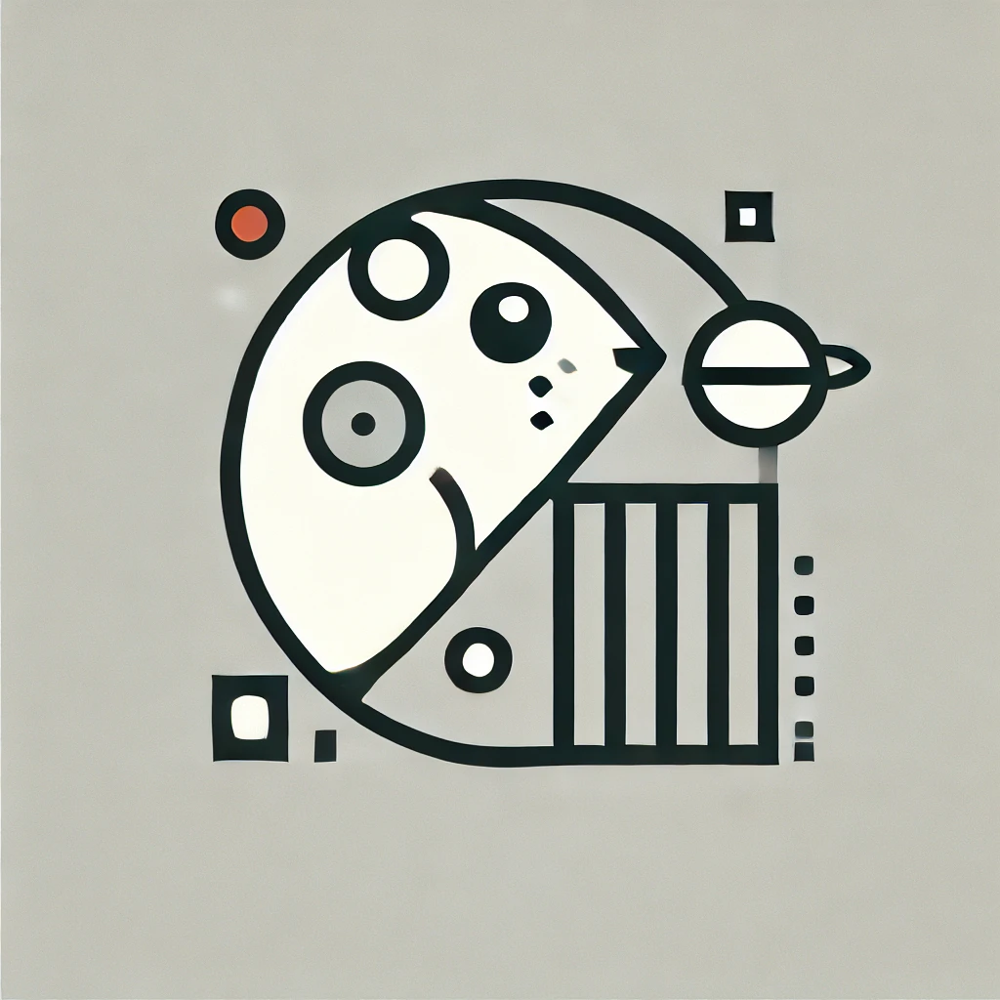
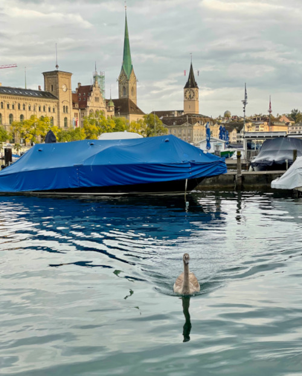
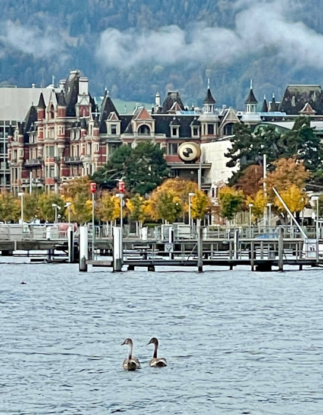
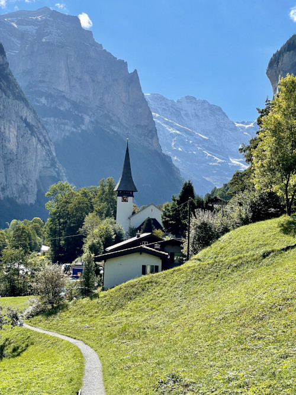
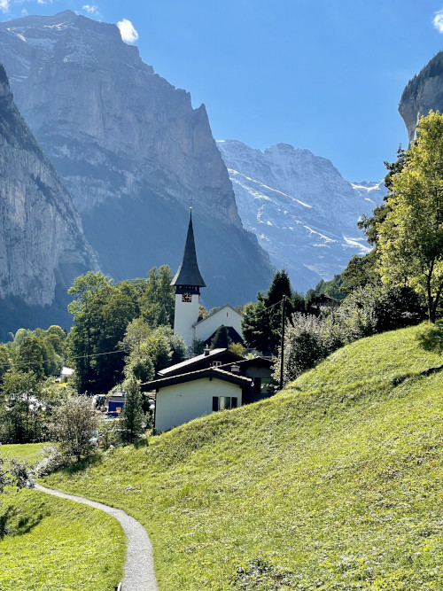

Hi, I’m astroginz!
Welcome to my page! The name astroginz is a reflection of my love for science and technology, as well as a tribute to my very first pet, a guinea pig named Ginz. After 25 years in the corporate world, I’ve decided to embrace a new challenge: stepping into the world of web development. This page is the starting point of that exciting new journey and also happens to be my very first creation on GitHub. Thanks for stopping by!
Welcome to My Slice of Zurich
I feel incredibly lucky to call Switzerland home, especially in the beautiful city of Zurich. My apartment is just a stone's throw from Lake Zurich, a spot that has become a part of my daily routine. I love starting my mornings with a peaceful stroll along the water, often taking a moment to snap a photo and soak in the tranquility.
A Passion for Photography
Nature
I enjoy capturing moments with my phone, and this summer was especially memorable with the chance to meet a mother swan and her four cygnets on the lake near my home. Watching them glide across the water was a joy, and their quiet grace inspired me to document their story through photographs.
Local Festivals
Every autumn, I look forward to Switzerland’s Alpabzug, when cows return from their summer pastures in the alpine mountains. Seeing them decorated with colorful flower crowns and bells as they pass through quiet villages is a reminder of the simpler, joyful traditions that make life here so special.
 

Street Art
One of my favorite street artists is Invader. I love stumbling across his mosaics here in Switzerland. Invader, a French artist, is known for his tile creations inspired by 8-bit video games, especially Space Invaders. Since the 1990s, his colorful pieces have appeared on walls and public spaces around the world. It’s always a fun surprise to spot one and adds a bit of adventure to my day.

Doing My Small Part for Open Knowledge
I’ve been a regular Wikipedia user for over a decade. The platform’s principles of peer collaboration, built on constructive dissent and mutual respect, deeply resonate with me. In the spirit of open and accessible knowledge, I aim to contribute in my own small way to making information verifiable and available to all.
With a background in STEM, I’m naturally curious about the “why” and “how” of things. Lately, I’ve been exploring topics like artificial intelligence, algorithmic biases, ethics of artificial intelligence, behavioral science, renewable energy, and sharpening my skills in editing and web development.
What I’m Reading Next
Reading is a way for me to slow down, and reflect. Right now, I’ve got a few books on my list that I’m excited to dive into:
-
"A Journey Home" by Ira Tyde
A debut novel about self-discovery and belonging—it’s at the top of my holiday reading list.
-
"Freedom" by Angela Merkel
I’ve always admired Angela Merkel’s calm and steady leadership. I’m looking forward to her memoir and the behind-the-scenes stories of her challenges and triumphs.
-
"Becoming" by Michelle Obama
Watching the Netflix documentary about Michelle Obama's tour sparked my interest in her story. It’s a nice way to enjoy some quality "me time".